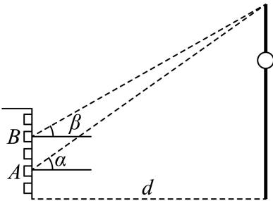
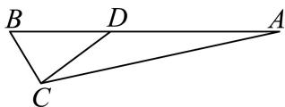
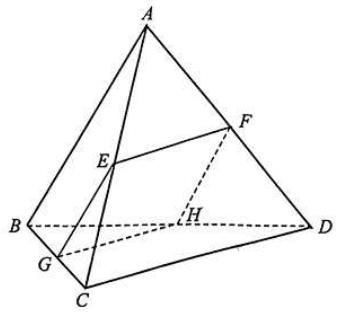
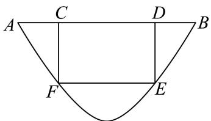

01 【来源：静安25一模·1】
查看所属专题设集合 ，，则 ______。
作答区
整卷阅读 · 学生版 · 21 题
按来源题号排列；内容来自分类汇编，仍需回源核对。
没有找到匹配题目。
设集合 ，，则 ______。
不等式 的解集为______。
已知 是虚数单位， 是纯虚数，则实数 的值为______。
设 是等差数列，，，则该数列的前8项的和 的值为______。
到点 、 距离之和为10的动点 的轨迹方程为______。
在 中，已知 ，，，则 的值为______。
已知物体的位移 （单位：m）与时间 （单位：s）满足函数关系 ，则该物体在 时刻的瞬时速度为______（m/s）。
若用 替换命题“对于任意实数 ，有 ，且等号当且仅当 时成立”中的 ，即可推出平均值不等式“任意两个正数的算术平均值不小于它们的几何平均值，且等号当且仅当这两个正数相等时成立”，则 ______。
以双曲线 的离心率为半径，以右焦点为圆心的圆与双曲线的渐近线相切，则 的值为______。
如图所示，小明和小宁家都住在东方明珠塔附近的同一幢楼上，小明家在 层，小宁家位于小明家正上方的 层，已知 。小明在家测得东方明珠塔尖的仰角为 ，小宁在家测得东方明珠塔尖的仰角为 ，则他俩所住的这幢楼与东方明珠塔之间的距离 ______。

记 。若函数 是偶函数，则该函数图象与 轴交点的纵坐标的最大值为______。
已知 、、、、 是从大到小连续的正整数，且 ，则 的最小值为______。
设 ，则“”是“ 且 ”的（ ）。
A. 充分非必要条件
B. 必要非充分条件
C. 充要条件
D. 既非充分又非必要条件
污水处理厂通过清除污水中的污染物获得清洁用水并生产肥料。该厂的污水处理装置每小时从处理池清除掉12%的污染残留物。要使处理池中的污染物水平降到最初的10%，大约需要的时间为（ ）。（参考数据：）
A. 14小时
B. 18小时
C. 20小时
D. 24小时
我国古代数学著作《九章算术》中将四个面都是直角三角形的空间四面体叫做“鳖臑”。如图是一个水平放置的 ，，，。现将 沿 折起，使点 移动到点 ，使得空间四面体 恰好是一个“鳖臑”，则二面角 的大小为（ ）。

A.
B.
C.
D.
在四棱锥 中，，，，则该四棱锥的高为（ ）。
A.
B.
C.
D.
设函数 ，。
（1）求函数 的单调区间；
（2）求不等式 的解集。
已知向量 ，，且 。
（1）求 及 ；
（2）记 ，求函数 的最小值。
如图所示，正三棱锥 的侧面是边长为2的正三角形。

（1）求正三棱锥 的体积 ；
（2）设 分别是线段 的中点。
求证：① 平面 ；② 若平面 交 于点 ，则四边形 是正方形。
如图的封闭图形的边缘由抛物线 和垂直于抛物线对称轴的线段 组成。已知 ，抛物线的顶点到线段 所在直线的距离为2。

（1）请用数学符号语言表达这个封闭图形的边缘；
（2）在该封闭图形上截取一个矩形 ，其中点 在线段 上，点 在抛物线 上。求以矩形 为侧面， 为母线的圆柱的体积最大值；
（3）求证：抛物线 的任何两条相互垂直的切线的交点都在同一条直线上。
如果函数 满足以下两个条件，我们就称函数 为 型函数。
① 对任意的 ，有 ，；
② 对于任意的 ，若 ，则 。
求证：
（1） 是 型函数；
（2） 型函数 在 上为增函数；
（3）对于 型函数 ，有 （ 为正整数）。